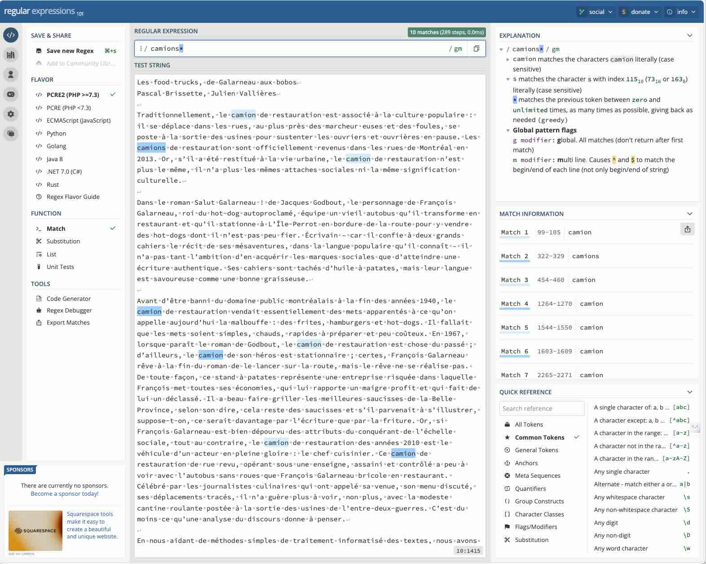

# Importation sous forme de tableau de données du texte de Maria Chapdelaine avec son identifiant unique. Si le fichier existe déjà dans le dossier "données", il sera simplement chargé dans l'environnement.
if(!dir.exists("donnees")) {
dir.create("donnees")
}
if (file.exists("donnees/maria.RDS")) {
maria <- readRDS("donnees/maria.RDS")
} else {
maria <- gutenberg_download(13525, mirror = "http://mirror.csclub.uwaterloo.ca/gutenberg/")
saveRDS(maria, "donnees/maria.RDS")
}
# Transformation de l'encodage des chaînes de caractères du vecteur `text`
maria$text <- iconv(maria$text, from = "latin1", "utf8")
# Élimination des lignes blanches
maria <- maria[maria$text != "",]
# Élimination du péritexte
maria <- maria[grep("CHAPITRE I\\b", maria$text):nrow(maria),]
# Repérage de la ligne correspondant à chaque début de chapitre
debut_chapitres_v <- which(grepl("CHAPITRE", maria$text))
# Utilisation du vecteur précédent pour indiquer la ligne correspondant à la fin de chaque chapitre
fin_chapitres_v <-
append((debut_chapitres_v[-1] - 1), length(maria$text))
# Création d'une petite fonction permettant la séparation des mots d'une chaîne de caractères (tokénisation)
tokenisation_fun <-
function(texte, debut_chapitre, fin_chapitre) {
texte_v <- texte[as.integer(debut_chapitre):as.integer(fin_chapitre)]
mots_l <- strsplit(texte_v, "\\W") # séparation de tous les mots
mots_v <- unlist(mots_l) # transformation de l'objet liste en vecteur
mots_v <- tolower(mots_v) # Bas de casse
mots_pleins_v <- which(mots_v != "") # Identificatioon des éléments vides
mots_v <- mots_v[mots_pleins_v] # Élimination des éléments vides
mots_v <- mots_v[-c(1:2)] # Élimination des noms de chapitre
return(mots_v) # Renvoi explicite de l'objet vecteur
}
# Création d'une liste vide dans laquelle on emmagasinera les mots de chacun des chapitres
mots_chapitres_l <-
vector(mode = "list", length = length(debut_chapitres_v))
# On remplit notre objet liste avec les mots de chacun des chapitre (à l'aide d'une structure de contrôle appelée "boucle for")
for (i in seq_along(debut_chapitres_v)) {
mots_chapitres_l[[i]] <- tokenisation_fun(
texte = maria$text,
debut_chapitre = (debut_chapitres_v[i]),
fin_chapitre = fin_chapitres_v[i]
)
}
# On crée un nouveau tableau de données comprenant une colonne pour les numéros de chapitres:
mots_chapitres_df <-
data.frame(
chapitre = c(
"I",
"II",
"III",
"IV",
"V",
"VI",
"VII",
"VIII",
"IX",
"X",
"XI",
"XII",
"XIII",
"XIV",
"XV",
"XVI"
)
)
# ... une colonne où seront rassemblés tous les mots sous forme de liste:
mots_chapitres_df$mots <- sapply(mots_chapitres_l, "[")
# Et une colonne indiquant le nombre de mots de chaque chapitre
mots_chapitres_df$longueur_chap <- sapply(mots_chapitres_l, length)
# Création d'une colonne avec tous les mots de chaque chapitre distinct joints en une seule chaine de caractères
mots_chapitres_df$texte <-
sapply(mots_chapitres_df$mots, paste, collapse = " ")
# On crée trois colonnes, une pour chacun des prénoms des prétendants de Maria. La valeur correspond au nombre d'occurrences de chaque prénom dans chaque chapitre. La fonction utilisée, `str_count()`, est prise à l'extension stringr.
mots_chapitres_df$francois <-
str_count(mots_chapitres_df$texte, pattern = "fran[cç]ois")
mots_chapitres_df$lorenzo <-
str_count(mots_chapitres_df$texte, pattern = "lorenzo")
mots_chapitres_df$eutrope <-
str_count(mots_chapitres_df$texte, pattern = "eutrope")
# On peut visualiser la structure de données
mots_chapitres_dfIntroduction aux expressions régulières
Le couteau suisse des chercheur·euse·s en sciences humaines
Dans le bagage des chercheuses et chercheurs en sciences humaines et sociales, habitué·e·s à travailler avec des textes, les expressions régulières constituent un couteau suisse d’une grande utilité qui permettra de trouver, d’extraire, de filtrer ou de remplacer des mots ou expressions variées dans un ou plusieurs textes. L’atelier va permettre de se familiariser avec cet outil. Nous allons l’utiliser dans un environnement de programmation, mais vous pouvez également tirer profit de cet outil dans des logiciels de traitement de texte.

Origine et utilité des expressions régulières
Les expressions régulières sont issues des travaux de Stephen Cole Kleene (1909-1994), mathématicien américain contemporain d’Alan Turing, dans le domaine des mathématiques formelles, et plus exactement de la théorie des automates. Elles sont mises à profit dès les années 1960 dans le repérage de motifs dans des textes et ont été utilisés dans les langages de programmation et les systèmes d’exploitation.
Dans les études littéraires, les expressions régulières peuvent servir à extraire de textes littéraires des noms d’entités ou des expressions très précises, avec une ou plusieurs conditions. On peut également les utiliser pour corriger des textes comportant des erreurs (pensons à des textes qui ont été océrisés). Comme on le verra plus ci-dessous, on s’en sert couramment en conjonction avec des fonctions de recherche pour structurer l’information des textes et pour les traiter ensuite avec les outils des TAL. Elles sont la pierre angulaire de cette partie du travail que l’on appelle le “prétraitement”.
Exemple de prétraitement avec expressions régulières
Dans l’exemple ci-dessous, on importe le roman Maria Chapdelaine, de Louis Hémon, du site Projet Gutenberg. Vous pouvez exécuter les lignes de code l’une après l’autre, et observer le résultat. Les expressions régulières sont utilisées à trois reprises, une première fois pour repérer les débuts de chapitres, une deuxième fois pour segmenter les chaînes de caractéres (tokenisation), une troisième fois pour compter les occurrences des noms des prétendants de Maria dans chacun des chapitres.
Principes et opérateurs de base
Les expressions régulières sont des séquences de caractères (lettres, ponctuations, symboles) qui forment des motifs permettant de trouver d’autres séquences de caractères dans des textes.
Définition proposée par ChatGPT:
Une expression régulière (ou regex, pour “regular expression” en anglais) est une séquence de caractères qui définit un motif utilisé pour rechercher, correspondre ou manipuler des chaînes de caractères dans du texte. Autrement dit, c’est un outil puissant qui permet de spécifier des règles pour trouver des fragments de texte qui respectent certaines conditions. Les expressions régulières sont largement utilisées dans divers domaines comme la programmation, le traitement de texte, l’analyse de données et l’automatisation. (OpenAI, ChatGPT-4o, version 21 sept. 2024)
Une expression régulière peut prendre la forme exacte d’un mot ou d’une expression en langage naturel. Par exemple, “Montréal” attrapera très exactement cette chaîne précise de caractères dans un texte, “Montréal”, mais il attrapera également “Montréalais”, “Montréalaise” et “Montréalaises”, à moins que vous n’ajoutiez une balise de fin de mot: “Montréal\\b”. Dans cette dernière expression, les deux barres diagonales indiquent au logiciel que “b” n’est pas à prendre comme la lettre “b” d’un mot, mais comme un opérateur, une balise de mot. Dans la plupart des langages de programmation, une seule barre est utilisée. Les deux barres sont spécifiques à R, où elles servent à “échapper” l’opérateur d’échappement lui-même…
Voici quelques-uns des symboles et opérateurs les plus communs:
| Expression | Description | Éléments saisis et exemples |
|---|---|---|
|
L’expression saisit la lettre ou le chiffre tel qu’il est exprimé. | “a”, “b”, “c”, “A”, “B”, “C” “1”, “2”, “3” |
\\b |
Balise de mot | L’expression jour attrapera aussi bien le mot “jour” que “aujourd’hui”, tandis que \\bjour\\b` n’attrapera que le mot “jour” au singulier, tout en minuscules. |
\\w |
N’importe quel caractère d’un mot | \\w saisira une seule lettre, minuscule ou majuscule, d’une suite de lettres encadrées de blancs typographiques ou de ponctuations. Par exemple, str_extract("Victor Hugo", "\\w"), renverra seulement la première lettre du premier mot, “V”. |
\\s |
Une espace (simple ou tabulation) | \\s saisira une espace, une seule, à moins d’être suivi de l’opérateur +. Ainsi, strsplit("Victor Hugo", "\\s"), en base R, séparera le prénom et le nom et renverra une liste comprenant les deux éléments. |
. |
N’importe quel caractère (lettre, chiffre, ponctuation, espace simple), une seule fois. | \\bMontr.al\\b saisirait le mot “Montréal”, “Montreal”, mais également “Montrial”, “Montr’al”, “Montr al”, etc. Très pratique pour attraper dans un texte des mots dont on soupçonne qu’ils pourraient avoir été orthographiés de différentes manières. |
\\. |
Un point, tout simplement. Les deux barres transversales inversées annulent la fonction spéciale accordée autrement au point. | La fonction str_replace_all``("Je mange une pomme","\\.", "!") renverra “Je mange une pomme!”, mais str_replace_all(``"Je mange une pomme",``".", "!") renverra “!!!!!!!!!!!!!!!!!!!” |
? |
Cet opérateur est un quantifieur “paresseux” (lazy quantifier). | Opérateur très utile pour indiquer que, dans une expression, une lettre ou un symbole est facultatif, que l’on veut attraper un mot, peu importe qu’une certaine lettre soit ou non présente. Par exemple \\bMontréalaise?\\b saisira aussi bien “Montréalais” que “Montréalaise”. Le caractère ? rend facultatif le “e” qui précède l’opérateur. |
\\? |
Un point d’interrogation, tout simplement | Le point d’interrogation est ici “échappé” par les barres diagonales. |
+ |
Cet opérateur est un quantifieur gourmand (greedy quantifier). | Ah+ saisira “Ah”, mais aussi “Ahh”, “Ahhh”, et ainsi de suite, jusqu’à ce que la fonction de recherche trouve un caractère autre que “h”. |
\\+ |
Un opérateur mathématique, tout simplement | Les barres diagonales “échappent” le symbole mathématique. |
^ |
Marque le début d’une chaîne de caractères (ce qui suit doit se trouver au tout début de la chaîne). | Supposons que nous ayons 1000 documents à filtrer selon que le premier mot du document soit “Femme”. On pourra utiliser une fonction de recherche avec, comme motif, ^Femme. Si le mot est présent dans l’un ou l’autre des documents, mais qu’il n’est pas le tout premier mot, le texte ne sera pas retenu. |
$ |
Marque la fin d’une chaîne de caractères (ce qui précède doit se trouver à la toute fin de la chaîne). | À l’inverse de l’exemple précédent, femme$ saisira les documents qui se terminent par “femme” (sans la marque du pluriel: le “e” final de “femme” est immédiatement suivi du symbole $). |
[ ] |
Tout caractère, ponctuation ou symbole qui se trouve à l’intérieur, y compris l’espace ou la tabulation, une seule fois. | L’expression Montr[ée]al saisira à la fois “Montréal” et “Montreal”. |
# Exemple simple d'une expression régulière qui repère et extrait tous les mots commençant par une majuscule.
texte <- "Victor Hugo, Emile Zola, et Jean-Paul Sartre sont des écrivains célèbres."
pattern <- "\\b[A-Z][a-z]+\\b"
str_extract_all(texte, pattern) |> unlist()[1] "Victor" "Hugo" "Emile" "Zola" "Jean" "Paul" "Sartre"Groupes de capture
Il existe d’autres symboles et quantifieurs que vous découvrirez à l’usage, mais une introduction aux expressions régulières serait incomplète si elle ne comprenait également une présentation des groupes de capture (group constructs). Ces constructions permettent de regrouper des parties d’une expression régulière pour diverses opérations, comme la capture de sous-chaînes.
| Expression | Description | Exemple |
|---|---|---|
(?=motif) |
Assertion d’anticipation (positive lookahead). Vérifie qu’un motif suit la chaine qu’on souhaite attraper. | Soit la phrase: “Simone de Beauvoir a écrit Le Deuxième sexe (1949). Le Deuxième sexe est un essai philosophique de de Beauvoir.” L’expression Le Deuxième sexe(?=\\s\\(\\d{1,4}\\)) saisira la première occurrence du titre, mais non la seconde. |
(?<=motif) |
Assertion de rétrovision (positive lookbehind). Vérifie qu’un motif précède une chaine qu’on souhaite attraper. | Dans l’exemple précédent, l’expression (?<=Beauvoir a écrit )Le Deuxième sexe attrapera la première occurrence du titre, mais non la seconde. |
(?!motif) |
Assertion d’anticipation négative (negative lookahead). Vérifie qu’un certain motif ne suit pas un autre motif qu’on souhaite attraper. | Soit la séquence suivante: “Victor Hugo est un écrivain. Victor s’intéresse aussi à la politique.”
|
(?<!motif) |
Assertion de rétrovision négative (negative lookbehind). Vérifie qu’un certain motif ne précède pas un autre motif qu’on souhaite saisir. | Soit la séquence suivante: “Victor Hugo est un écrivain. Hugo s’intéresse aussi à la politique.” Le motif |
Pratique
Le code ci-dessous permet d’extraire les 2000 premiers caractères du roman Maria Chapdelaine, importé et prétraité au début du document. Copier ce texte et coller-le dans la fenêtre d’un site permettant de tester les expressions régulières, tel regex101.
substr(mots_chapitres_df$texte[1], 1, 2000)[1] "ite missa est la porte de l église de péribonka s ouvrit et les hommes commencèrent à sortir un instant plus tôt elle avait paru désolée cette église juchée au bord du chemin sur la berge haute au dessus de la rivière péribonka dont la nappe glacée et couverte de neige était toute pareille à une plaine la neige gisait épaisse sur le chemin aussi et sur les champs car le soleil d avril n envoyait entre les nuages gris que quelques rayons sans chaleur et les grandes pluies de printemps n étaient pas encore venues toute cette blancheur froide la petitesse de l église de bois et des quelques maisons de bois également espacées le long du chemin la lisière sombre de la forêt si proche qu elle semblait une menace tout parlait d une vie dure dans un pays austère mais voici que les hommes et les jeunes gens franchirent la porte de l église s assemblèrent en groupes sur le large perron et les salutations joviales les appels moqueurs lancés d un groupe à l autre l entrecroisement constant des propos sérieux ou gais témoignèrent de suite que ces hommes appartenaient à une race pétrie d invincible allégresse et que rien ne peut empêcher de rire cléophas pesant fils de thadée pesant le forgeron s enorgueillissait déjà d un habillement d été de couleur claire un habillement américain aux larges épaules matelassées seulement il avait gardé pour ce dimanche encore froid sa coiffure d hiver une casquette de drap noir aux oreillettes doublées en peau de lièvre au lieu du chapeau de feutre dur qu il eût aimé porter à côté de lui égide simard et d autres qui comme lui étaient venus de loin en traîneau agrafaient en sortant de l église leurs gros manteaux de fourrure qu ils serraient à la taille avec des écharpes rouges des jeunes gens du village très élégants dans leurs pelisses à col de loutre parlaient avec déférence au vieux nazaire larouche un grand homme gris aux larges épaules osseuses qui n avait rien changé pour la messe à sa tenue de tous les l ours vêtement court de toile brun"Fabriquez des expressions qui permettront de saisir:
- Le déterminant “un”;
- Le mot “église” non suivi de “de bois”.
Utiliser les LLM génératifs comme assistant
Au cours de leur entraînement, les llm génératifs ont été exposés aux expressions régulières et ils peuvent donc servir d’assistants dans l’élaboration d’expressions ou dans l’explication d’expressions existantes. L’invite ci-dessous, formulée selon le modèle d’optimisation COSTAR, pourrait être adaptée à plusieurs cas de figure.
# CONTEXT
Tu es un expert dans la recherche d’information et l’extraction de chaines de caractères à l’aide d’expressions régulières (regex)
# OBJECTIVE
Je souhaite que tu m’assistes dans l’élaboration d’expressions régulières. L’objectif est de remplacer toutes les occurrences du mot ‘église’ en ‘ÉGLISE’, à moins que ce mot soit écrit au pluriel.
# STYLE
Le style doit être méthodique et pédagogique
# TONE
Le ton doit être neutre et bienveillant
# AUDIENCE
Tu assistes un spécialiste de littérature sans connaissance approfondie des expressions régulières.
# RESPONSE
La réponse doit être fournie sous la forme d’une expression régulière dont chaque partie sera expliquée clairement. Le format est un texte suivi.
Voici maintenant la réponse offerte à l’invite par GPT-4o. Elle présente un très bon point de départ pour exécuter l’opération.
Pour atteindre ton objectif, nous allons élaborer une expression régulière (regex) qui permettra de remplacer le mot “église” par “ÉGLISE”, mais sans modifier les occurrences du mot lorsqu’il est au pluriel (“églises”).
Voici l’expression régulière que nous allons construire :
\béglise\b(?!s)Maintenant, décomposons cette expression pour bien comprendre comment elle fonctionne :
\b: Il s’agit d’une “limite de mot”. Cet élément permet de garantir que nous traitons uniquement des occurrences complètes du mot “église” et non des parties de mots plus grands. Par exemple, sans cette limite, un mot comme “réglisse” pourrait être partiellement modifié. La limite de mot assure que l’expression est appliquée uniquement à un mot isolé.
- Le premier
\bavant “église” assure que le mot commence à cet endroit (et non au milieu d’un autre mot).- Le second
\baprès “église” assure que le mot se termine ici.
église: C’est simplement le mot que nous cherchons à modifier. L’expression va repérer chaque occurrence du mot “église” écrit au singulier ou au pluriel.
(?!s): Ceci est une “assertion négative”, appelée lookahead négatif. Cela signifie que l’expression ne correspondra pas si le mot “église” est immédiatement suivi d’un “s”. En d’autres termes, cela permet de s’assurer que nous ne sélectionnons que le mot “église” lorsqu’il n’est pas suivi par un “s”, ce qui exclut les formes plurielles.
?!signifie que l’expression vérifie ce qui suit “église” sans inclure ces caractères dans la sélection.sest le caractère que nous cherchons à éviter (le “s” du pluriel).Exemple d’utilisation
- Texte d’origine : “L’église du village et les églises de la ville sont anciennes.”
- Texte modifié : “L’ÉGLISE du village et les églises de la ville sont anciennes.”
Dans cet exemple, la regex a remplacé “église” par “ÉGLISE” pour le mot singulier, mais a laissé “églises” (pluriel) intact.
Utilisation pratique
Tu peux utiliser cette expression dans des outils ou langages de programmation qui supportent les expressions régulières (Python, R, Notepad++, etc.) pour effectuer ce remplacement de manière automatisée.
Si tu as des questions ou si tu veux explorer des variantes, n’hésite pas à demander !
OpenAI, ChatGPT-4o, version du 21 septembre 2024.
Voyons maintenant comment cela pourrait être fait avec R:
phrase_a_corriger <- "Dans la petite ville, l’egliste se trouve en face de l’églize principale, qui, selon les habitants, est la plus ancienne eglise du quartier, bien que certains disent que l’eglise a été reconstruite plusieurs fois, car chaque eglise qu’ils ont connue était différente, ce qui rend l’histoire de l’eglisse assez mystérieuse pour ceux qui cherchent à comprendre comment l’egliste a pu résister à toutes ces années d’intempéries, malgré les rumeurs disant que l’eglize est en réalité bien plus récente que ce que les archives indiquent." #(OpenAI, ChatGPT-4o, version du 21 septembre 2024.)
str_replace_all(phrase_a_corriger, pattern = "\\b[eé]gli\\w+", replacement = "église")[1] "Dans la petite ville, l’église se trouve en face de l’église principale, qui, selon les habitants, est la plus ancienne église du quartier, bien que certains disent que l’église a été reconstruite plusieurs fois, car chaque église qu’ils ont connue était différente, ce qui rend l’histoire de l’église assez mystérieuse pour ceux qui cherchent à comprendre comment l’église a pu résister à toutes ces années d’intempéries, malgré les rumeurs disant que l’église est en réalité bien plus récente que ce que les archives indiquent."Bibliographie
Jockers, Matthew L. Text Analysis with R for Students of Literature. Quantitative Methods in the Humanities and Social Sciences. Springer International Publishing, 2014. https://doi.org/10.1007/978-3-319-03164-4.
Hart, Michael S. « Gutenberg Project », https://www.gutenberg.org/. (Consulté le 21 septembre 2024.)
« Library Carpentry: Introduction to Working with Data (Regular Expressions): Regular Expressions ». https://librarycarpentry.org/lc-data-intro/01-regular-expressions. (Consulté le 20 septembre 2024.)
Taulli, Tom. Regex with ChatGPT. [First edition]. [Sebastopol, California]: O’Reilly Media, Inc., 2024. https://www.oreilly.com/library/view/-/0642572059316/.
Yarberry, William. CRAN Recipes : DPLYR, Stringr, Lubridate, and RegEx in R. Berkeley, CA: Apress, 2021. https://doi.org/10.1007/978-1-4842-6876-6.
Modules R:
Johnston, Myfanwy, et David Robinson. gutenbergr: Download and Process Public Domain Works from Project Gutenberg. 0.2.4, 12 novembre 2023. R-Packages, https://cloud.r-project.org/web/packages/gutenbergr/index.html.
Wickham, Hadley, et al. stringr: Simple, Consistent Wrappers for Common String Operations. 1.5.1, 14 novembre 2023. R-Packages, https://cran.r-project.org/web/packages/stringr/index.html.